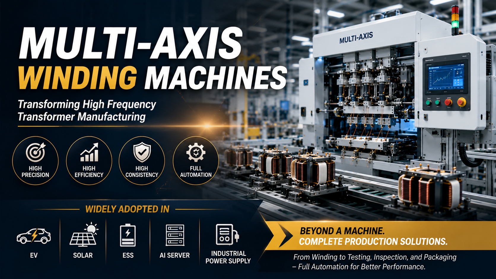

Why Multi-Axis Winding Machines Are Transforming High Frequency Transformer Manufacturing

Summary
As demand for electric vehicles, renewable energy systems, AI servers, industrial power supplies, and energy storage continues to accelerate, transformer manufacturers are under increasing pressure to improve productivity while maintaining exceptional product quality.
Traditional winding methods are becoming a major production bottleneck due to labor shortages, inconsistent quality, and limited production capacity.
This article explores why multi-axis winding technology has become the foundation of modern transformer manufacturing and how it enables manufacturers to build highly efficient, scalable, and intelligent production lines capable of supporting future market growth.
Technology
- Multi-Axis Winding Machine
- Automatic Transformer Winding
- High Frequency Transformer Manufacturing
- Precision Motion Control
- Automatic Wire Tension Control
- Transformer Production Automation
- Intelligent Material Handling
- Vision Inspection
- Electrical Testing
- Smart Factory Integration
Challenge
For many years, transformer winding depended heavily on skilled operators.
While manual winding offered flexibility for small production volumes, today's manufacturing environment presents new challenges:
Increasing labor shortages
Rising labor costs
Higher customer quality expectations
Greater product complexity
More frequent product changeovers
Demand for higher daily output
Difficulty maintaining consistent winding quality
As production volumes continue to increase, winding often becomes the biggest bottleneck in the entire manufacturing process.
Without improving winding efficiency, manufacturers struggle to expand production capacity while maintaining product consistency.
Solution
Multi-axis winding technology replaces repetitive manual operations with intelligent motion control capable of producing highly consistent winding patterns at high speed.
Unlike conventional winding equipment, modern multi-axis systems coordinate multiple servo-controlled movements simultaneously, ensuring precise wire positioning, stable tension control, and repeatable production quality.
When integrated with automated material handling, assembly, testing, and inspection systems, multi-axis winding becomes the foundation of a fully automated transformer production line that significantly improves manufacturing efficiency and long-term factory competitiveness.
Workflow & Layout
Automatic Material Feeding
↓
Core Positioning
↓
Multi-Axis Precision Winding
↓
Wire Cutting & Processing
↓
Automatic Core Assembly
↓
Soldering & Dispensing
↓
Electrical Performance Testing
↓
Vision Inspection
↓
Automatic Sorting
↓
Packaging
Rather than functioning as an isolated workstation, the multi-axis winding machine serves as the central production module within a fully integrated transformer manufacturing system.
Results & ROI
- Manufacturers adopting multi-axis winding technology commonly experience:
- Higher production throughput (UPH)
- Improved winding precision
- Stable wire tension throughout production
- Reduced dependence on highly skilled operators
- Lower defect and rework rates
- Better product consistency across production batches
- Faster production changeovers
- Easier expansion for future manufacturing capacity
- Lower long-term manufacturing costs
- Actual performance depends on transformer design
- production volume
- and overall factory automation level.
Equipment List
- A complete transformer automation solution may include:
- Automatic Material Feeding System
- Multi-Axis Transformer Winding Machine
- Wire Processing Equipment
- Automatic Core Assembly System
- Precision Soldering Station
- Glue Dispensing System
- Electrical Testing Equipment
- AOI Vision Inspection System
- Laser Marking (Optional)
- Conveyor Transfer System
- Automatic Sorting & Packaging
- MES / Production Management Integration (Optional)
Project Overview / Opening
High-frequency transformers play a critical role in modern power electronics, supporting applications ranging from EV charging stations and solar inverters to AI server power supplies and industrial automation equipment.
As global demand continues to grow, manufacturers are shifting from labor-intensive production toward intelligent manufacturing systems capable of delivering higher productivity and more consistent product quality.
Among all production processes, winding remains one of the most technically demanding and production-critical operations. This is why multi-axis winding technology has become one of the most important innovations in transformer manufacturing over the past decade.
Key Points
- 📌 Manual winding limits production scalability.
- 📌 Multi-axis control significantly improves winding precision.
- 📌 Automated tension control enhances product consistency.
- 📌 Higher production speeds reduce manufacturing costs.
- 📌 Digital production improves quality traceability.
- 📌 Flexible programming supports multiple transformer models.
- 📌 Automation reduces labor dependency.
- 📌 Multi-axis winding creates the foundation for complete smart factory integration.
Implementation / Workflow
A modern transformer manufacturing project begins with analyzing product specifications, production targets, and future expansion requirements.
Engineers then integrate multi-axis winding equipment into a complete automated workflow that includes material feeding, wire processing, transformer assembly, soldering, testing, inspection, and packaging.
By synchronizing each production stage through intelligent automation, manufacturers eliminate bottlenecks, improve production stability, and create a continuous manufacturing process capable of supporting large-scale production with consistent quality.
Instead of optimizing a single machine, successful factories optimize the entire production system.
Customer Value / Results
Industries rapidly adopting multi-axis winding technology include:
√ Electric Vehicle (EV) Manufacturing
√ Solar Inverter Manufacturing
√ Energy Storage Systems (ESS)
√ AI Server Power Supply Manufacturing
√ Industrial Power Supply Production
√ Telecommunications Equipment
√ Consumer Electronics
√ Industrial Automation Equipment
Business benefits include:
√ Higher production capacity
√ Lower labor dependency
√ Improved manufacturing consistency
√ Better product reliability
√ Faster order fulfillment
√ Reduced operating costs
√ Easier production expansion
√ Stronger global market competitiveness
For manufacturers serving high-growth industries, multi-axis winding technology provides both immediate operational improvements and a scalable platform for future expansion.
Conclusion / Next Step
Multi-axis winding machines are transforming high-frequency transformer manufacturing because they solve more than a single production challenge. They improve precision, increase productivity, enhance quality consistency, and provide the automation foundation required for modern smart factories. However, the greatest value comes when winding technology is integrated into a complete automated production line rather than operating as a standalone workstation.
We help manufacturers worldwide design, source, integrate, and deliver complete industrial automation projects by leveraging China's manufacturing ecosystem. Whether you are upgrading a single transformer production process or planning a fully automated manufacturing facility, we can support your project with production line planning, equipment sourcing, system integration, and end-to-end project delivery.
Visit our Contact page to discuss your transformer manufacturing project, request a customized production line proposal, or explore automation solutions tailored to your factory's production goals and future expansion plans.
SEO Title
Why Multi-Axis Winding Machines Are Transforming High Frequency Transformer Manufacturing
SEO Description
As demand for electric vehicles, renewable energy systems, AI servers, industrial power supplies, and energy storage continues to accelerate, transformer manufacturers are under increasing pressure to improve productivity while maintaining exceptional product quality.
Traditional winding methods are becoming a major production bottleneck due to labor shortages, inconsistent quality, and limited production capacity.
This article explores why multi-axis winding technology has become the foundation of modern transformer manufacturing and how it enables manufacturers to build highly efficient, scalable, and intelligent production lines capable of supporting future market growth.
Related Blog
Start with Your Business Challenge
Tell us about your warehouse, factory, or production requirements. We'll help you explore practical automation solutions and relevant project references.